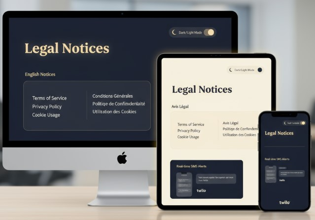

Public Notices Web & Mobile Platform Redesign

Rebuilt a public-facing legal notices system to support multi-state regulations, accessibility, and modern UX.
Company: Quoin
Duration: Feb 2020 – Feb 2024
Tools: AWS, Docker, MySQL, React, Node.js, ElasticSearch, Twilio
Platform: Multi-State Notices System
Delivery Method: Agile (Scrum/Kanban)
Link: Visit Quoin
Work Done
- Managed migration from a legacy Python system to a modern Node.js + React stack.
- Implemented XML/TXT ingestion and bilingual support for multi-state notices.
- Added real-time text alerts using Twilio API, dashboards, and interactive map UX for improved user experience.
- Built a customized content and admin dashboard to streamline user and client management.
- Introduced new user signup enhancements and extended archival from 1 to 3 years.
- Added dark/light mode options for accessibility and user preference.
- Directed Agile delivery across discovery, development, and go-live phases, including training and client support.
- Ensured compliance with legal standards and accessibility requirements.
- Improved operational efficiency through automation and scalable AWS/Docker infrastructure.